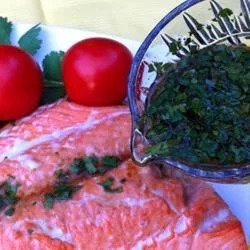

Asian Lime & Cilantro

Delicioso A super simple yet super tasty way to enjoy baked,
fried or grilled salmon.
I'm sure it's just as good on many other types of fish as well!
Ingredients
- ⅓ cup fresh lime juice
- 1 tablespoon soy sauce
- 1 ½ teaspoons white sugar
- 2 tablespoons chopped fresh cilantro
Return To Main Page